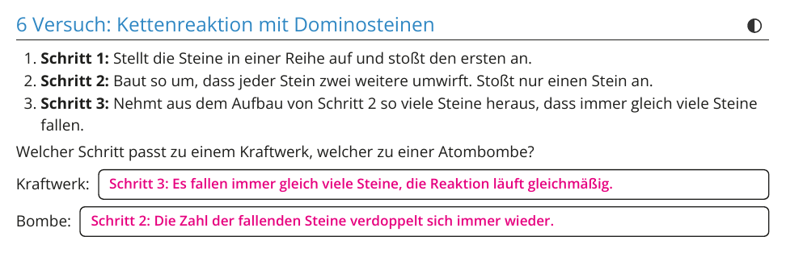
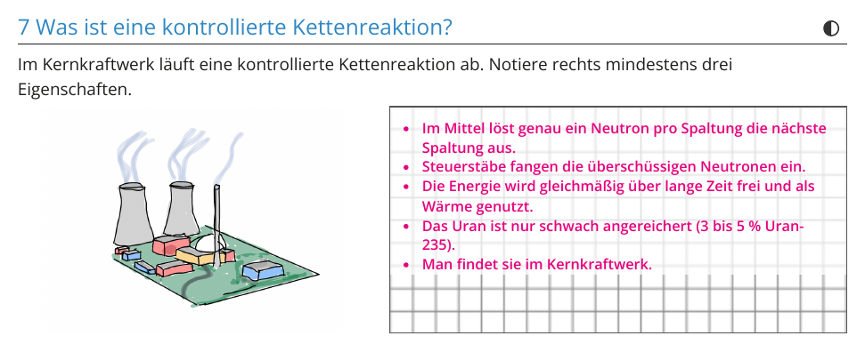
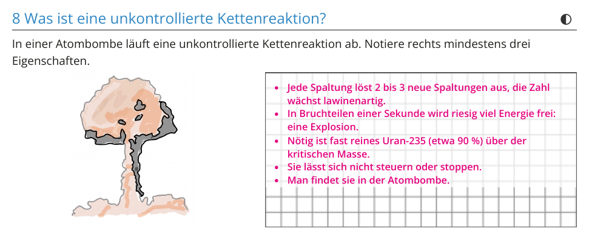
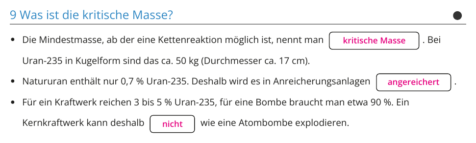
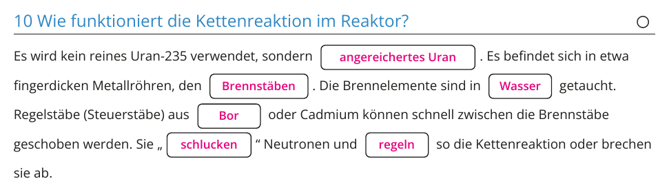

Klasse 10 · Physik · W17 (Woche ab 25.01.2027) · Leitfrage 5
| Material | Anzahl | Hinweis |
|---|---|---|
| nicht nötig | ||
| Material | Anzahl | Hinweis |
|---|---|---|
| Dominosteine | etwa 50 |





| Beispiel | was weitergegeben wird | kontrolliert oder nicht? |
|---|---|---|
| Dominoeffekt | ein Stein wirft den nächsten um | kontrolliert, wenn jeder genau einen weiteren umwirft |
| Ansteckung bei Grippe | Ansteckungszahl R | R größer 1: Die Welle wächst. R kleiner 1: Sie ebbt ab. |
| Lawine | ein Schneebrett reißt weitere mit | unkontrolliert, sie wächst immer weiter |
Kettenreaktion mit 0,8 bis 3 wirksamen Neutronen, Steuerstäbe mit Leistungskurve.
Ein Heft für W16 bis W18, gebaut nach deinem Tutory-Blatt „Kettenreaktion“ mit deinen Zeichnungen. Seiten 1 bis 4 als A3-Bogen doppelseitig kopieren, einmal in W16 austeilen. Lösung: Seiten 5 bis 8 des PDFs, abschnittsweise auch im Folien-Tab.